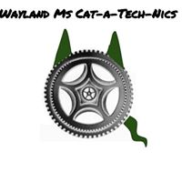

 Wayland Union Schools FTC | |||||||||
|
We are a FTC robotics team from Wayland Union Middle School. We make sure the students do all the real work including this website! We also make it a point that we all show gracious professionalism. Joe Harnish Senior Manager of Devops says that "FTC is a place where junior high students learn to function in a work place enviorment and as a team." He has helped and sponsored our team for a little less than two years with two of his children participating.
The coders make and use instructions for the robot of their assigned build team without them the robot would not be able to move. Just like the build teams they make similar code thats just abit diffrent to see which overall is better.
Our total team makeup is a little bit diffrent than most others. It consists of 5 main groups...
The builders handle the robots physical construction, they are they're the ones who do use all the nuts and bolts. The builders are also made of two teams that each come up with a robot symetrical to the other group
The coders make and use instructions for the robot of their assigned build team without them the robot would not be able to move. Just like the build teams they are also made of two parts and each part makes similar but diffrent code to get a finished robot that is the best of both worlds.
Our YouTubers make videos to post online so we can be better known which may help us out in competition as far as getting awards.
The recorders do three main things, create our team notebook, write down what we do if a problem ever occours we know what we did and how to fix it, they also do some of our reasearch.
We need quite a bit of money to run our team and that comes from sponsors (see sponsors page) and fundraising team has to convince them to give it to us. The fundraising team also makes bake sales, can drives, and such to raise money as well.
To make ourselves better known and to help represent ourselves to sponsors website team creates a website that represents us using only HTML coding instead of shortcuttin with apps like weebly.
We all have a life outside of robotics here are some of our favorite hobbies and things to do.
also made of two parts and each part makes similar but diffrent code to get a finished robot that is the best of both worlds.Our YouTubers make videos to post online so we can be better known which may help us out in competition as far as getting awards.
The recorders do three main things, create our team notebook, write down what we do if a problem ever occours we know what we did and how to fix it, they also do some of our reasearch.
We need quite a bit of money to run our team and that comes from sponsors (see sponsors page) and fundraising team has to convince them to give it to us. The fundraising team also makes bake sales, can drives, and such to raise money as well.
To make ourselves better known and to help represent ourselves to sponsors website team creates a website that represents us using only HTML coding instead of shortcuttin with apps like weebly.
We all have a life outside of robotics here are some of our favorite hobbies and things to do.